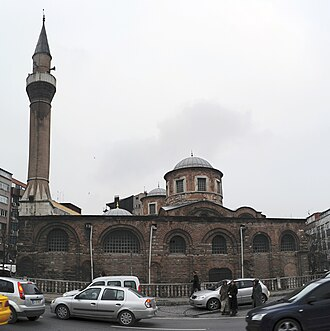

Общие сведения
La mosquée Fenari Isa, connue à l’époque byzantine sous le nom de monastère de Lips, est une mosquée d’Istanbul regroupant deux anciennes églises orthodoxes grecques, construites côte à côte et réunies sous un même toit, appelées respectivement « église nord » et « église sud ».
جَامِعُ فَنَارِي عِيسَى ، هو دِيرٌ سابقٌ للرَّاهِبات، يَضُم كَنيستين أرثوذكسيتين شرقيتين.يقع في حيِّ الفاتح، في مدينة إسطنبول التركية.ويَرجِعُ تاريخُ بناءِه إلى العصر البيزنطي.وكان يَحمِلُ اسم دير قُسْطَنْطين ليبز، الذي تمَّ تَحويلُه في العهد العثماني إلى جَامِعٍ، أُطْلِقَ عليه اسم جَامِع فَنَاري عِيسَى نِسبةً إلى المُلاَّ فَنَارِي عِيسَى.
Fenâri Îsâ Mosque, known in Byzantine times as the Lips Monastery, is a mosque in Istanbul, made of two former Eastern Orthodox churches.
Fenari İsa Camii, Molla Fenari Camii ya da eski adıyla Lips Manastırı Kilisesi, İstanbul'da, eskiden Ortodoks kilisesi olarak kullanılırken Türklerin şehri ele geçirmesi ile birlikte camiye çevrilen bir ibadethanedir.
Masjid Fenari İsa, atau yang dulunya bernama Biara Livos adalah sebuah masjid bersejarah peninggalan Bizantium yang berada di distrik Fatih, Provinsi Istanbul, Turki. Bangunan ini awalnya adalah sebuah Biara Ortodoks Timur yang dibangun pada tahun 908, yang kemudian beralih menjadi Gereja Latin pada tahun 1286, dan secara final diubah menjadi masjid pada tahun 1497 atau setelah peristiwa Penaklukan Konstantinopel tahun 1453.
Die Fenâri-Îsâ-Moschee ist eine ehemalige byzantinische Kirche in Istanbul, die heute als Moschee genutzt wird. Die Kirche war Teil des Konstantin-Lips-Klosters. Der Gebäudekomplex liegt im Istanbuler Stadtbezirk Fatih an der Adnan Menderes Avenue.
La moschea di Fenâri Isa, nell'età bizantina conosciuta anche come il monastero di Lips, è una moschea di Istanbul, costituita da due ex-chiese ortodosse orientali.
A Mesquita de Fenari Issa, conhecida durante o Império Bizantino como Mosteiro de Lips ou Mosteiro de Libos, é uma mesquita do distrito de Fatih em Istambul, criada a partir de duas igrejas ortodoxas. Inaugurada pelo almirante Constantino Lips em 907–908 durante o reinado do imperador Leão VI, o Sábio (r. 886–912) sobre as ruínas de um santuário do século VI, tornou-se pelo período um dos maiores conventos de Constantinopla. Sofreu inúmeros incêndios durante o período otomano, tendo sido restaurada em diversas ocasiões.
Монастырь Ли́пса — женский монастырь, основанный около 908 года в Константинополе трудами друнгария Константина Липса. Вскоре после того была освящена в присутствии самого Льва Мудрого небольшая соборная церковь размерами 13 на 9,5 метров, с многогранной средней апсидой и двумя ярусами окон — тройных внизу и щелевидных выше. В целом, первоначальная архитектура храма весьма близка кафоликону Мирелейона. До разграбления крестоносцами в 1204 году в соборе хранились реликвии — оставшиеся в камне столпы апостола Павла и оправленная в золото глава апостола Филиппа.
На карте
Документы и ссылки
- Wikipédia — Français
- Wikipédia — العربية
- Wikipédia — English
- Wikipédia — Türkçe
- Wikipédia — Bahasa Indonesia
- Wikipédia — اردو
- Wikipédia — Deutsch
- Wikipédia — Italiano
- Wikipédia — Português
- Wikipédia — 中文
- Wikipédia — Русский
- Wikidata — Q2424612
Данные: Викиданные (CC0), обновляются каждые 3 месяца. Год — самая ранняя известная дата постройки здания: для здания, ставшего мечетью позже (как Айя-София), это год постройки исходного здания. Фото: Викисклад, автор и лицензия — на странице каждой фотографии.